Introduction
Halloween! Spooky season! There are many popular monsters and ghouls loved and appreciated this time of year, and quite a classic is the lovely skeleton.
See this page as a homage—or love letter—to the delightful skeleton.
Why Skeletons?
Beautiful like porcelain but strong as...well...bone. Skeletons are the one ghoul that lives within us. We all are skeletons, and we are all beautiful.
In art, it's common for nudity to symbolize vulnerability. A skeleton is not only stripped of clothing but also their outer shell. A skeleton is showing you all of them; they're in a true state of vulnerability. It's admirable.
Let Your Peers Know
Let your peers know your love for the humble skeleton! Be romantic! Be erotic! Be free from shame!
I'm skeleton-romantic:
I'm skeleton-erotic:
My paramour is a skeleton:

Media
Media that appreciates the skeleton.
Silly Symphonies - The Skeleton Dance (YouTube Video)
Video starts at 00:22 to skip flashing.